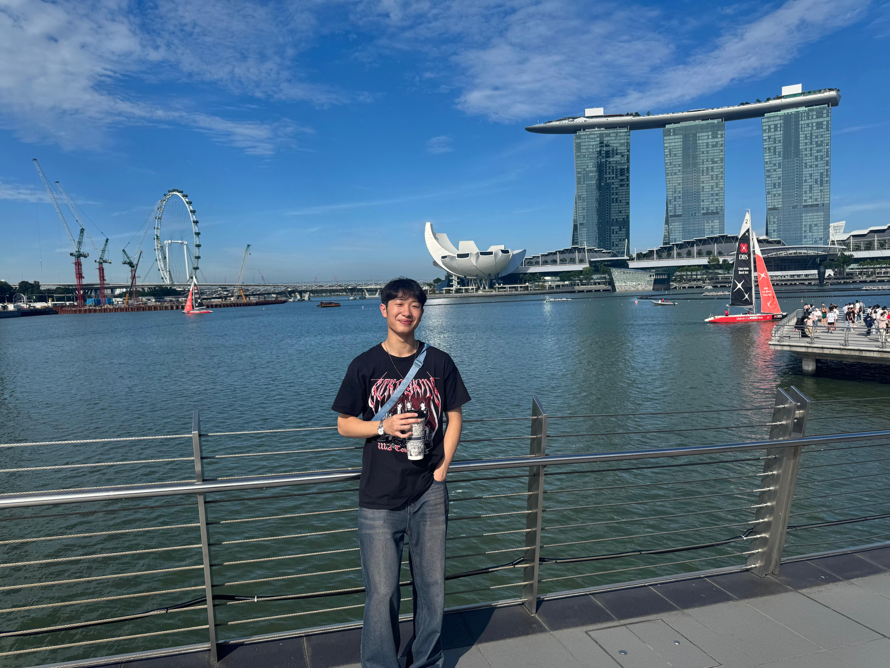

About Me

Hi, I'm Kyle Lin!
I am currently pursuing my Bachelors of Science in Computer Science at California Polytechnic State University in San Luis Obispo as an honors student, and have an anticipated graduation date of 2027. I have a solid foundation in multiple programming languages and am committed to expanding my knowledge and skills.